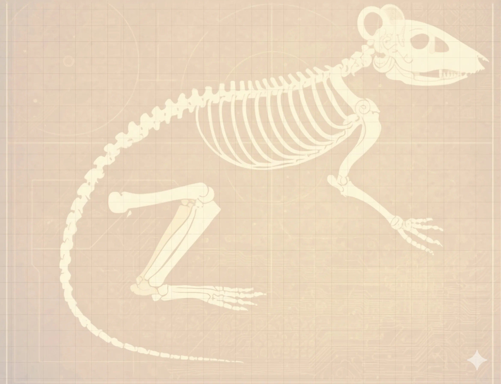

Viewer Discretion Advised — This project involves wild mice and may contain content some viewers find distressing.
KINETIC ENERGY
from RODENT RUNS.
Turning pests into renewable energy to power the future of robotics.
THE AI GRID
CRISIS.
AI model training and datacenter expansion are outpacing every energy grid projection. Renewables can't close the gap. We need a distributed, always-on biological energy source.
YoY increase in AI-driven datacenter electricity demand, 2023–2024
Datacenters need ~1,500 TWh/yr by 2030. Current grid covers ~1,100 TWh — leaving a 27% gap. (IEA, 2024)
NATURE'S UNTAPPED
EXECUTIVE FORCE.
There are 3 billion rats on Earth and growing. A 2025 study found 69% of major cities saw significant increases from 2007–2024. London has 20M rats vs. 9.5M humans. NYC: 3 million. US damage: $27B annually.
This is not a pest problem. It is a biological infrastructure opportunity.
BEYOND THE WHEEL: THE HOWL PILOT.

Calcifer is the first biological pilot of HOWL (Hamster Operated Walking Locomotion). His movement inside the spherical cockpit maps directly to the stride of our 10ft bipedal robot.
"Calcifer doesn't just power the machine — he gives it a soul."
FIELD RESEARCH.
Primary footage from active HOWL™ prototype trials.
Night Camera Trap Testing
Infrared night footage of a mouse entering the prototype live-trap. First field validation of the capture mechanism.
Mouse-Powered Wheel Testing
Wild mouse drives the prototype HOWL™ wheel. First proof-of-concept for rotational energy generation from wild rodent locomotion. Mouse released post-session.
Energy Harvesting Success
Hamster locomotion powers a small LED — closing the full energy conversion loop. Feasibility confirmed.
HOWL v1.0
NATURE AND MACHINE. IN SYNC.
A fleet of HOWL units patrolling urban outskirts; biology and robotics working as one, harvesting energy, maintaining biodiversity corridors.
JOIN THE PILOT WAITLISTPRODUCT ROADMAP.
Three products. One mission: make rodents the backbone of the next energy and robotics revolution.

PESTO AI
Intelligent Pest Management
AI-powered trap system that learns individual mouse movement patterns, optimizes capture timing, and predicts local population growth — humane by design, lethal to inefficiency.
- check_circle Movement pattern analysis
- check_circle Smart detection & capture
- check_circle Population prediction model

RODOR X
Rodent Power Generator
Scalable electromagnetic harvesting units that convert rodent locomotion into grid-ready electricity. Deploy in urban corridors, transit tunnels, and infrastructure margins where pests already thrive.
- check_circle Grid-connected energy output
- check_circle Zero-carbon footprint
- check_circle Urban-scale deployment

HOWL XPLORER
Biological Locomotion Platform
True mobility for rodents and the machines they power. HOWL Xplorer bridges biological instinct and robotic precision, enabling research, remote navigation, and the next frontier of pet mobility technology.
- check_circle Robotics & research platform
- check_circle Pet mobility applications
- check_circle Bio-mechanical navigation
RATLANTIS.
A world where rodents and people coexist.
Not a future where pests are eliminated — but one where they're integrated. Ratlantis is the long horizon of Pestroleum's work: a symbiotic urban ecosystem where rodent energy powers the infrastructure they inhabit, and the boundary between pest and resource dissolves entirely.

READY TO
JOIN THE HARVEST?
Spots in the HOWL beta are strictly limited.
BY JOINING, YOU AGREE TO OUR BIOLOGICAL PRIVACY TREATY.